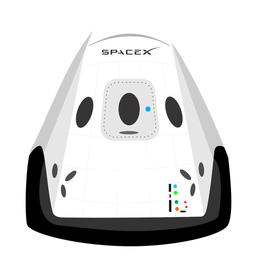

Hyperblog
Tu blog de cabecera
Aquí inicia la historia de un gran proyecto
Y este es el párrafo de incio donde vamos a explicar las cosas increíbles que se pueden hacer con ramas


Los blogs son la mejor forma de compartir información y tus ideas.
Mucho más que ir a conferencias o salir en Youtube.
Excepto si eres un rockstar.
Pero estadísticamente no lo eres.... por ahora.Suscribete y dale like